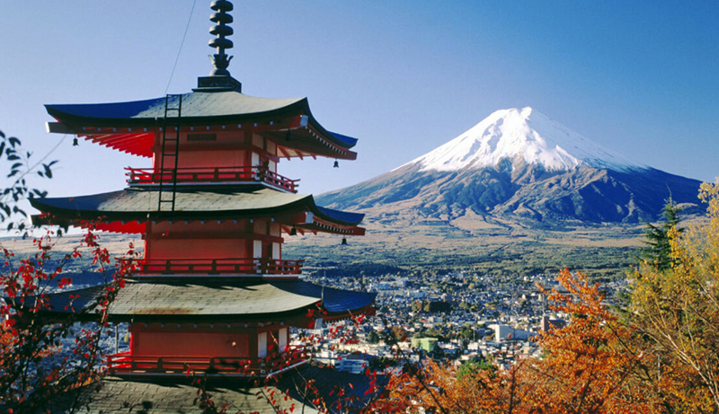
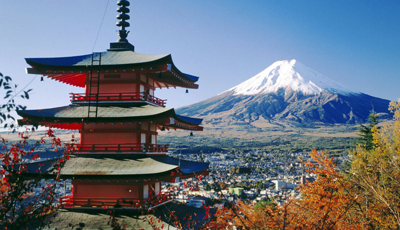
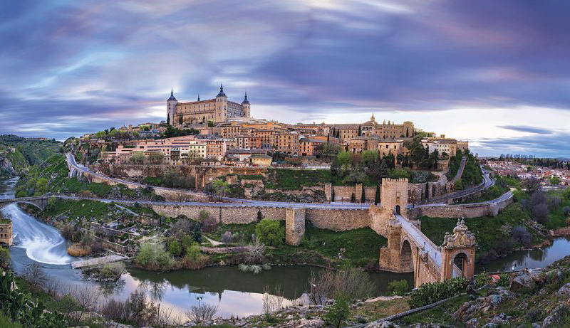
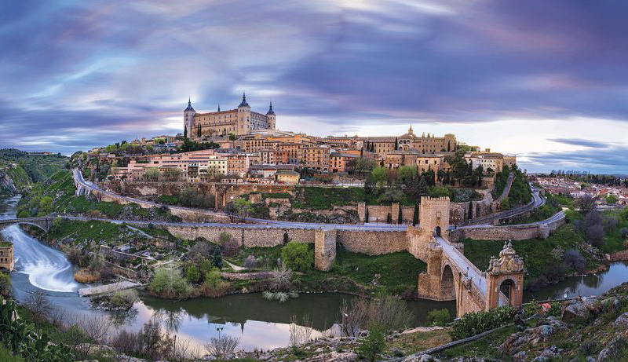
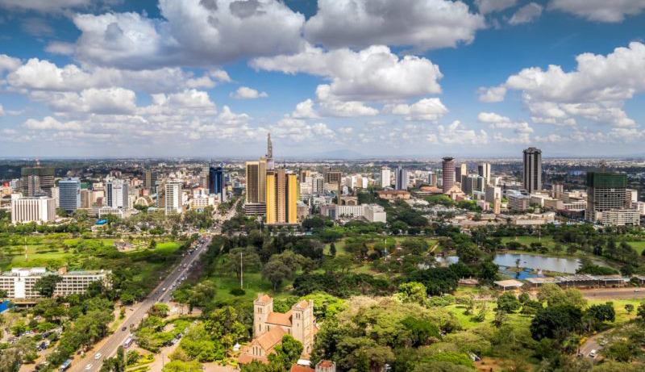
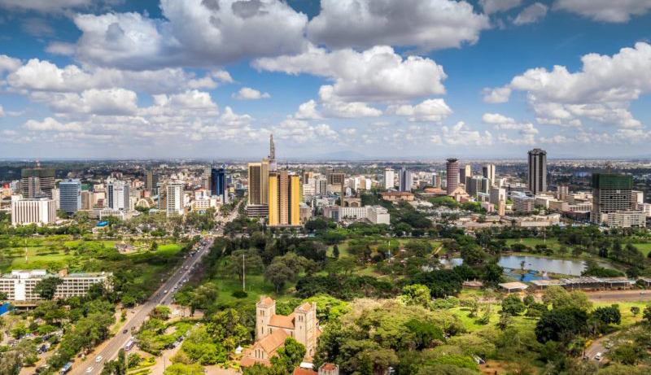

Destinos
Oceanía
Naturaleza, cultura y patrimonio son las tres palabras que definen a la perfección a Oceanía.
Los viajes a Oceanía te permitirán conocer uno de los destinos más singulares de toda la Tierra . Un continente de verdaderos contrastes tanto naturales, como culturales son los que te esperan allí. Formado por gran cantidad de islas divididas en varias áreas, la formada por Australia y Nueva Zelanda y las conocidas como Melanesia, Micronesia y Polinesia, este impresionantes archipiélago es una de las zonas más recónditas de todo el globo terráqueo. Por su localización geográfica, situada entre los océanos Índico y Pacífico, es uno de los territorios más espectaculares y variados climatológicamente hablando. Por lo que encontrarás zonas con un clima parecido al mediterráneo, climas totalmente desérticos o climas tropicales con lluvias torrenciales. Es decir, el lugar perfecto si lo que quieres es vivir una gran aventura.
Asia
Asia es un continente fascinante, misterioso e intrigante.
Su población diversa, una cultura increíble, la historia, sus tradiciones únicas y religiones se han ganado la curiosidad de viajeros de todo el mundo. Para aquellos que sueñan con descubrir Oriente, un universo paralelo pero muy diferente al nuestro
Si decidimos visitar Asia, más nos vale disponer de unas largas vacaciones ya que estamos ante el continente más extenso y poblado del mundo. Los límites de Asia ya nos dan una pista de su envergadura: al norte con el océano Glacial Ártico, al sur con el océano Índico, al oeste con los Montes Urales y al este con el océano Pacífico.
Este llamativo continente tiene innumerables opciones y lugares que visitar, y hablando de países encontramos todos los extremos posibles: del exotismo de Tailandia, a la última tecnología y modernidad de Japón. De la excéntrica cultura coreana a la espiritualidad de la India o de las playas de portada de Filipinas e Indonesia, a la inmensidad de los paisajes en China. La lista es interminable.
1.jpg) 


Europa
Viajar a Europa es el sueño de muchos, por muchas razones. Y es que las hay, como su historia, cultura, arquitectura, monumentos, paisajes, gastronomía...
Europa es como atravesar los siglos, las culturas y una multitud de paisajes diferentes en un continente más reducido que todos los demás. Con una multitud de ciudades interesantes que pueden visitarse en un fin de semana, la península europea también atrae por sus lagos, sus estaciones de deportes de invierno ubicadas en los Alpes y en los Pirineos, así que por el perfume a pineda de sus playas mediterráneas. Frente a semejante diversidad ¡muchos son los viajeros que no saben por donde empezar!
El clima tampoco es la excepción, y el mapa meteorológico de Europa es muy variado. Las regiones situadas a orillas del mar Mediterráneo son conocidas por sus veranos calurosos y secos que complacen a los aficionados al sol. Por el contrario, el norte del continente y sus inviernos rigurosos seducen a los más temerarios en busca de adrenalina, que no vacilan en tomar las riendas de un trineo de huskies para ir a romper el hielo en Finlandia o Suecia. Tampoco se puede olvidar a las islas británicas y a Irlanda, territorios en los que la lluvia, a veces incesante, contribuye a acentuar su encanto.

 

África
África es uno de los continentes más fascinantes que existen. Su naturaleza espectacular, su gran diversidad de flora y fauna, sus playas paradisíacas de arena blanca fina y aguas turquesas y cristalinas y su diversidad cultural, lo hacen un lugar único. Allí podrás relajarte en sus playas de ensueño a la vez que tendrás la oportunidad de realizar safaris espectaculares durante los que podrás ver animales salvajes en estado puro.
Un viaje a África representa un verdadero viaje en el tiempo hasta el momento en que los animales reinaban en la Tierra y la vida era más simple a la vez que más difícil; donde da comienzo la humanidad hace más de millón y medio de años.
El continente africano reúne la sofisticada cultura árabe del Magreb, el esplendor del antiguo Egipto, pero también inmensos desiertos cuyos nombres evocan solo la promesa de una aventura: Sahara, Kalahari, Serengeti...
 

América
Continente alargado que reposa sobre una gran espina dorsal montañosa, nace en Alaska y se hunde en la Tierra del Fuego, el continente de la naturaleza y la frontera. América, tierra paradisíaca y tierra desolada, América tierra como el resto de los continentes.
América ya no sólo es los Estados Unidos. Además, América es toda Latinoamérica, toda América es ya un viaje. EL desarrollo de los países iberoamericanos ha hecho que el turismo con su lado positivo y con sus desventajas, crezca y se extienda por todo el continente. Los turistas brasileños, argentinos, mexicanos, colombianos o peruanos viajan ya como los europeos y a ellos se les unen los asiáticos en un movimiento de gentes, deseosas de conocer las geografías, los monumentos, los restos arqueológicos y las gastronomías de toda América.